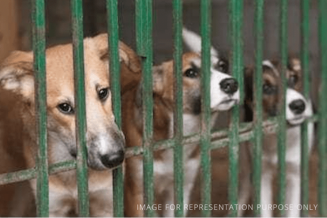

Take Action Now!
To The administrator, Chandigarh UT

Improve SPCA Chandigarh
Petition: To The administrator, Chandigarh UT
Requesting the office of the honourable administrator to intervene for correction of SPCA Chandigarh. SPCA should be subjected to annual assessments for provisioning for medicines, diagnosis, employees (like skilled surgeons), medical equipment, dietary needs of the sick and healthy animals and sanitation activities. Poor management and excessive centralization of SPCA Chandigarh..